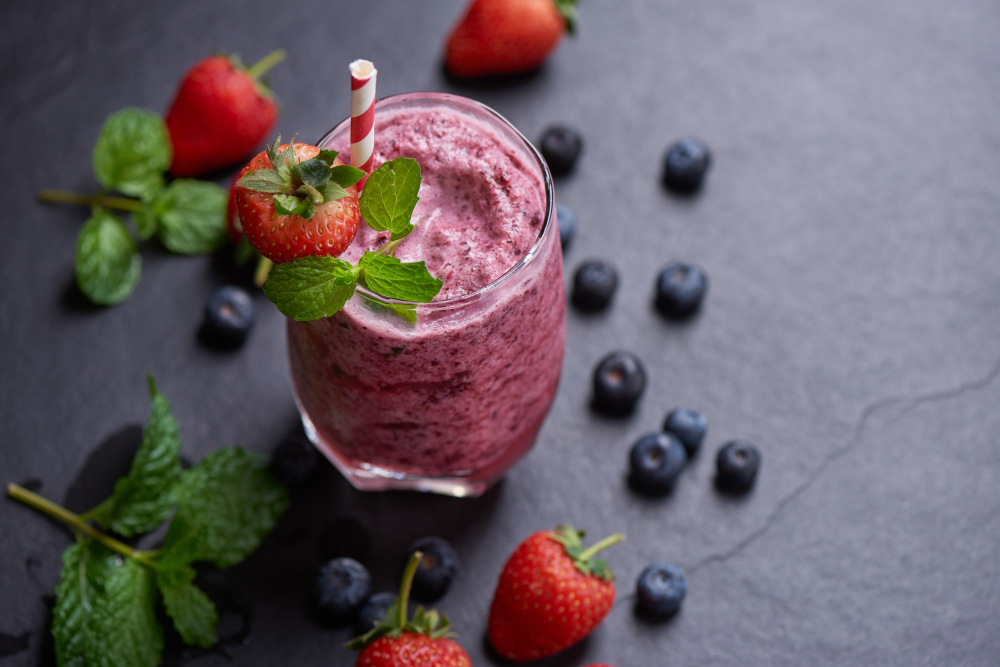

This vegan oatmeal smoothie has a deep pink color and a rich, creamy texture. It's very filling, and perfect for people in a rush in the morning. You don't have to give up a good breakfast when it's this fast to make! I use vitamin fortified soy milk.
